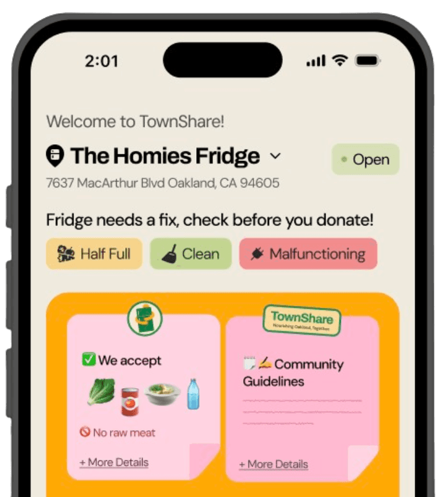
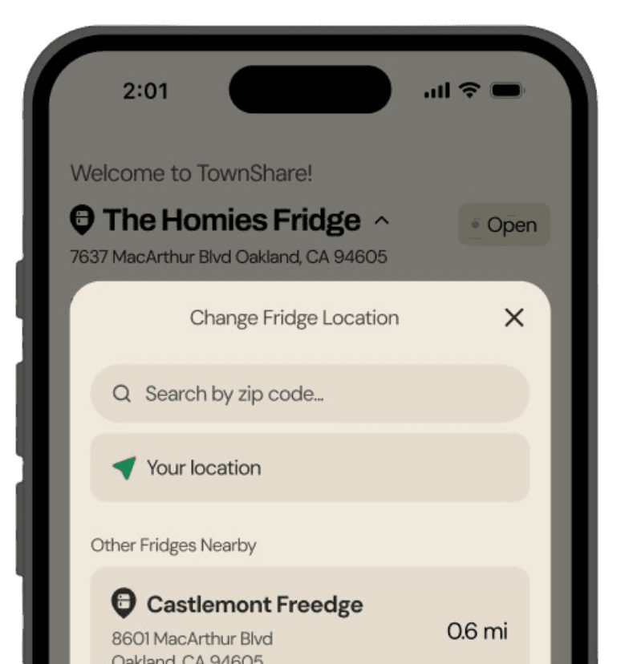
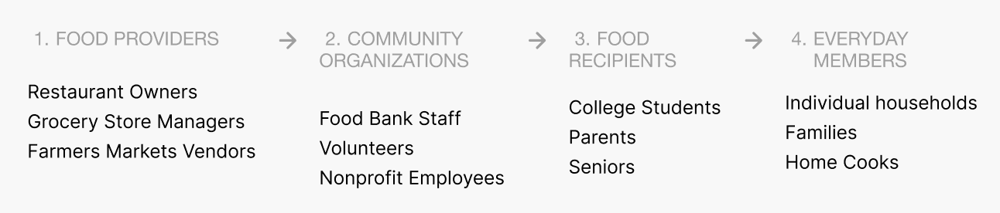
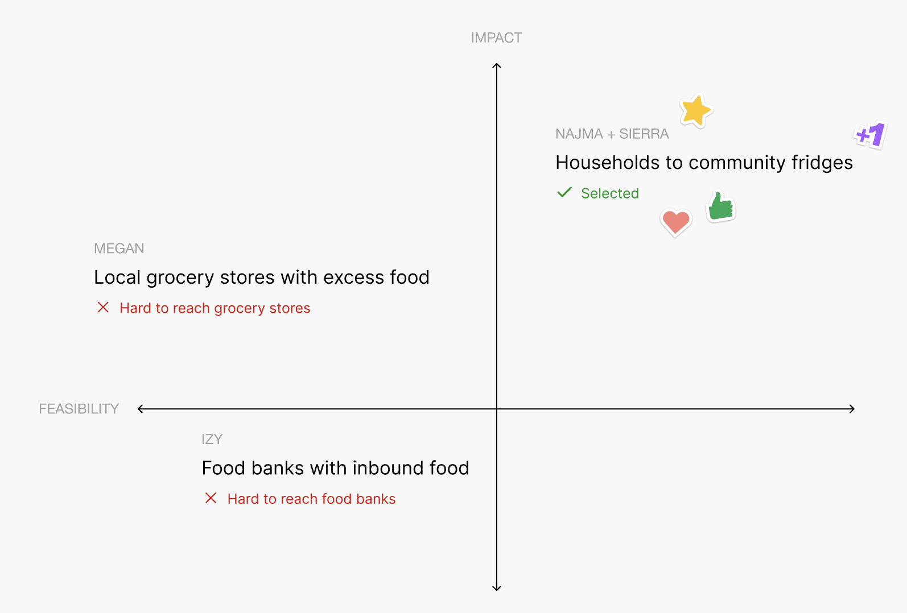
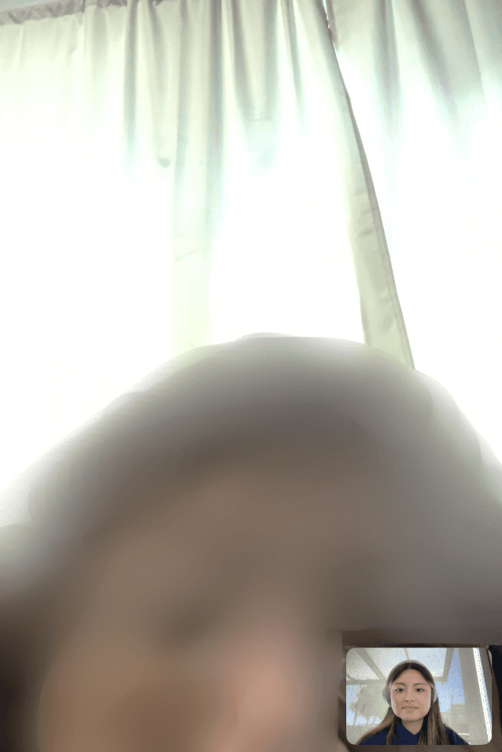
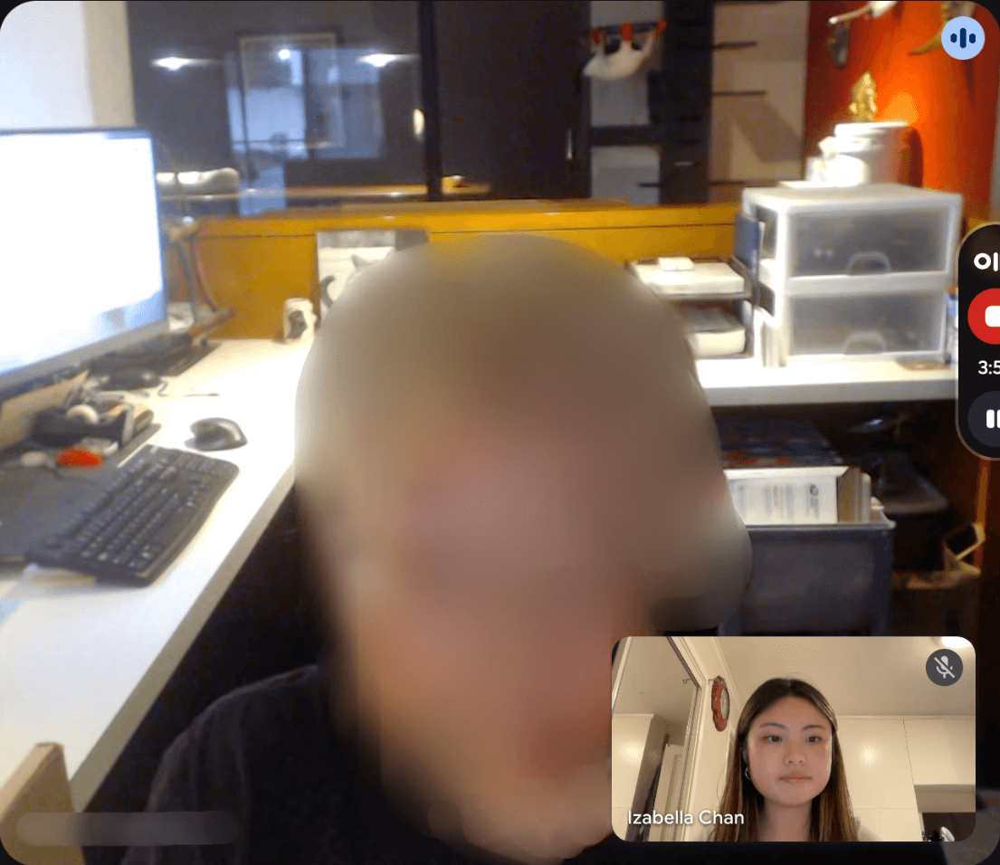
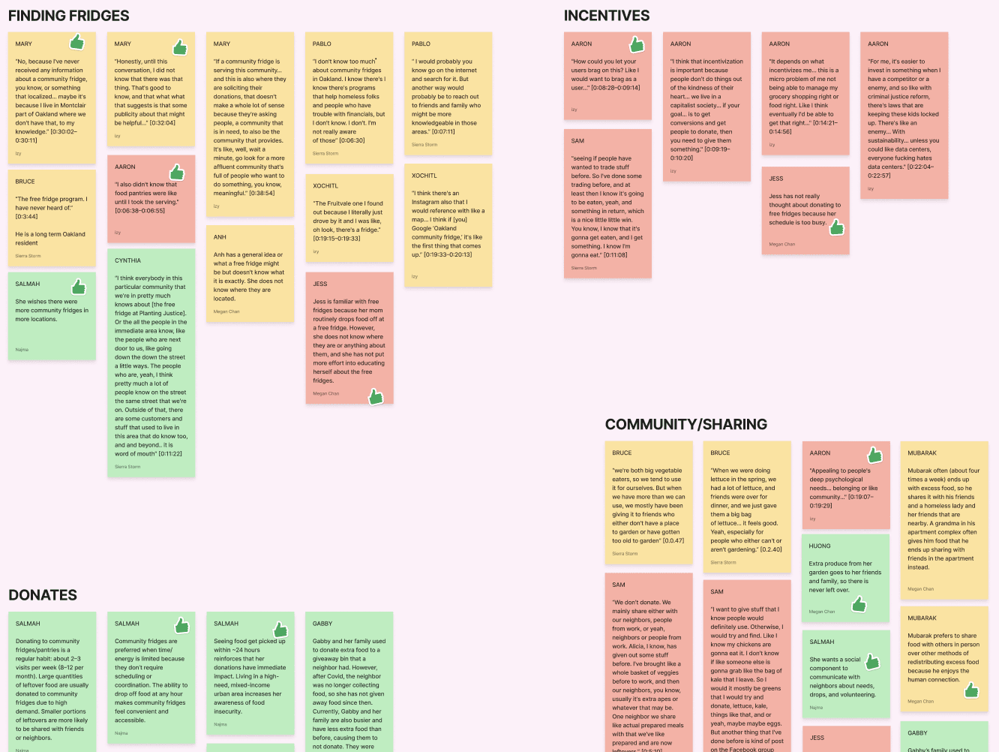
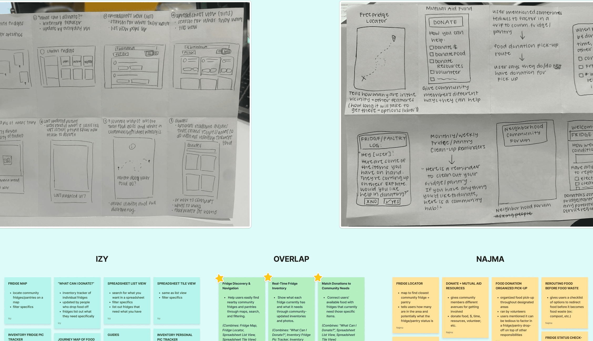

[CONTEXT]
Helping Oakland households turn extra food into community support
In 4 weeks, our team of designers ran 17 resident interviews, pivoted 3 times, and designed 5 iterations of a mobile web app that shows neighbors a fridge’s live status before they donate.
[PROBLEM]
Good food is wasted while neighbors go hungry
Raise your hand if you've thrown out food within the last month, and keep your hand up if you've ever felt guilty about it. Well you're not alone!
#1
Households are the #1 source of food waste in the U.S.
39B
meals go to waste every year
1 in 4
people in Alameda County face food insecurity
BUT WHY AREN'T MORE PEOPLE DONATING TO THEM?
[SOLUTION]
That's where TownShare comes in
Currently, residents don’t know what’s in a community fridge, or whether it’s even working, until they get there. They risk a trip to a fridge that’s full, broken or doesn’t accept what they brought, so many hesitate to donate at all.
TownShare is a mobile web app that provides real-time information on Oakland community fridges. It makes donating food more approachable and more efficient, helping reduce food waste one household at a time.

Fridge Status

Nearby Fridges

Check-in Questions

Community Updates
[RESEARCH]
From the whole food system to one fridge
We mapped the ecosystem, pivoted twice with feedback from PayPal and our mentor, then interviewed 17 residents to find the real problem.
HYPOTHESIS
Better coordination between restaurants, food banks and families would redistribute more excess food
Our first hypothesis was very broad: edible food exists, but people who need it can’t access it. We planned to cover the whole food ecosystem, providers, community organizations, recipients and everyday residents, thinking we could utilize interview insights to find a gap within it.
BRIDGEGOOD then gave us the amazing opportunity to have our progress reviewed by PayPal Product Managers and Engineers. Their feedback led to a major pivot: rather than trying to design for the entire food ecosystem, we needed to identify a specific user and opportunity to focus on. We then hypothesized that better coordination will increase the amount of excess food that is redistributed.

Original value chain with entire ecosystem

Value chain rebuilt with PayPal’s framework
HYPOTHESIS REWORK
Balancing impact and feasibility to narrow our research scope
Our mentor Judy pushed back: restaurants, cafes, and food banks were still too much for four weeks. Each of us pitched one stakeholder, plotted the ideas on an impact vs. feasibility grid, and dot-voted.

OLD HYPOTHESIS
Better coordination between restaurants, food banks, and individuals/families will increase the amount of excess food that is redistributed while reducing waste.
NEW HYPOTHESIS
Providing Oakland households with a straightforward, organized way to donate excess food to community fridges will increase food donations and reduce preventable household food waste.
USER RESEARCH
To test our assumptions, we interviewed users on how they handled excess food
We interviewed users 1-on-1 to gain insights into how they deal with or dispose of any extra food in their household, and then their experience around donating to community fridges.
14
Oakland residents interviewd
3
non-Oakland residents interviewed


V1 DESIGNS
Ran Crazy 8s, then realized we were designing without a clear “why”
Using AI and FigJam, we first synthesized our interviews by pulling out quotes, pain points and insights and grouping them by category. To explore those insights, we ran Crazy 8s and compared ideas across two teammates.
Then we noticed we were designing solutions without defining the “why.” Instead of generating multiple solutions for one specific problem, we were forcing a single catch-all solution onto multiple problems at once.

Interview insights grouped by category

Crazy 8s compared across 2 teammates
RESYNTHESIZING
Re-synthesized our interviews into 9 themes and 1 core problem to find a "why"
So we pivoted backward to anchor our ideas in a core problem first. We synthesized the highs and lows from our interviews and affinity-mapped them into recurring themes. Out of nine themes, one stood out: a lack of centralized information.
Discovery
Finding information in the first place
Real-time Status
Getting live up-to-date information
Awareness
Knowing what resources even exist
Donation Needs
Knowing what items are needed
[IDEATION]
Refined every step of Edna’s journey from mid-fi to hi-fi, guided by feedback and usability testing
Each round of feedback reshaped a moment in Edna’s journey. Follow her through the final flow and see how each step changed from its first version.
01
Edna finds a broken fridge, but reporting it means downloading the app first
Edna bikes over with extra corn, opens the fridge and finds it isn’t holding temperature. On the door is a flyer: “Help keep your community fridge up to date.”
02
She can't tell at a glance if a fridge is worth the trip
TownShare shows her that someone already reported the problem before she got there. The fridge was open and clean, but only half full and malfunctioning. She is frustrated that she can't donate after biking all the way over there.
03
The fridge is broken and she still has corn, but nowhere else to go
She puts in her location and sees Castlemont Freedge which is a bikeable distance away. It's also open, clean, working, and stocked 2 hours ago.
04
At first, she isn't sure what the fridge accepts
Each fridge page shows what it accepts and its rules.
05
Updating the fridge takes too many steps after a long bike ride
At Castlemont she drops off her corn and taps “Update me.” How clean is it? Clean. How full? Pretty full. Is it functioning? Yes.
06
Her update can’t show what she donated and what she has to say
She uploads a photo of her corn from her gallery and writes, “Biked here just now! Decided to drop off some corn and organize it a bit.”
07
Her donation ends on a dead-end “thank you”
A thank-you receipt pops up and prompts her to check out her contribution. She sees her update alongside her neighbors’ posts.
08
Features we left out
Not every idea made it into Edna’s day, but these would definitely be future steps we'd consider.


[SOLUTION]
From a broken fridge to a fresh donation: the final TownShare flow
Scan, check, find, update, share. After five rounds of iteration, here’s Edna’s full journey.
[IMPACT]

Metrics
20 out of 20 cohort members said they would use this product!
Takeaways
Learning to narrow our focus earlier. Nonetheless, each pivot taught us something new.

Next Steps
A year-one pilot goal of 2 fridges and 20 volunteer stewards. Revising and expanding app on Lovable.